Создание пользовательского интерфейса
Теоретическая часть
Цель работы: Приобретение практических навыков создания и использования различных типов форм в Microsoft Access: формы с несколькими элементами, формы в виде таблицы, разделенной формы и модального диалогового окна для организации эффективного пользовательского интерфейса.
Основные понятия:
Формы в MS Access представляют собой основные объекты интерфейса, предназначенные для ввода, просмотра, редактирования и поиска данных в таблицах и запросах. В зависимости решаемых задач Access предоставляет несколько специализированных типов форм, каждый из которых оптимизирован для определенных сценариев работы с данными.
Типы форм:
Форма с несколькими элементами – форма, которая отображает одновременно несколько записей, расположенных одна под другой в виде списка или таблицы, но с возможностью индивидуального оформления каждой записи (в отличие от стандартного табличного режима). Удобна для быстрого просмотра и редактирования набора записей.
Форма в виде таблицы – форма, которая визуально и функционально напоминает таблицу Access. Данные отображаются в виде строк и столбцов, поддерживаются сортировка, фильтрация и изменение ширины столбцов. Наиболее эффективна для работы с большими объемами структурированных данных.
Разделенная форма – гибридный тип формы, который одновременно отображает одну запись в верхней части (в виде карточки) и список всех записей в нижней части (в табличном виде). При выборе записи в табличной части данные автоматически обновляются в карточной части. Идеальна для детального просмотра и навигации по записям.
Модальное диалоговое окно – специальный тип формы, которая блокирует взаимодействие пользователя с остальными объектами базы данных до тех пор, пока окно не будет закрыто. Используется для ввода обязательных параметров, подтверждения действий, вывода сообщений об ошибках или сбора данных перед выполнением операций.
Практическая часть
Запустите приложение MS Access и откройте базу данных
Справа на навигационной панели выбираем таблицу «Водители»
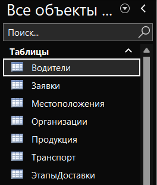
Нажимаем на вкладку «Создание»
В выпадающем списке «Другие формы» выбираем «Несколько элементов»
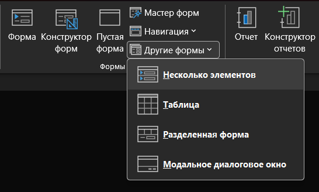
Сохраняем форму и даем ей название
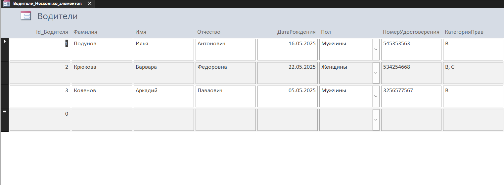
Теперь выбираем таблицу в навигационной панели
На вкладке «Создание» выбираем из выпадающего списка «Другие формы» выбираем тип «Таблица»
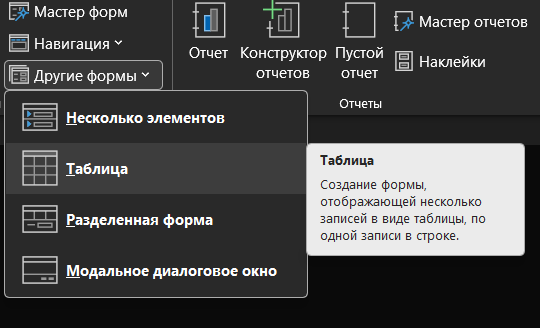
При выполнении создается форма с типом таблица, которую мы можем сразу заполнять данными
Сохраняем ее и даем ей имя «Продукция_Таблица»
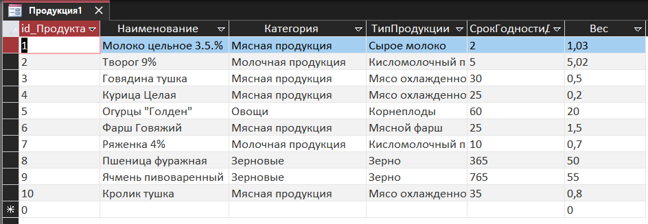
Далее мы выбираем таблицу «Транспорт» и на вкладке «Создание» выбираем из выпадающего списка «Другие формы» - «Разделенная форма»
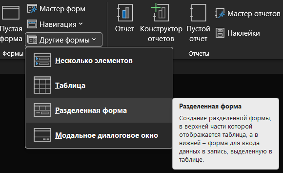
При нажатии у нас создается разделенная форма, где мы параллельно можем работать с формой, заносить данные и смотреть изменения в таблице, сохраняем форму и называем ее «Транспорт_Разделенная»
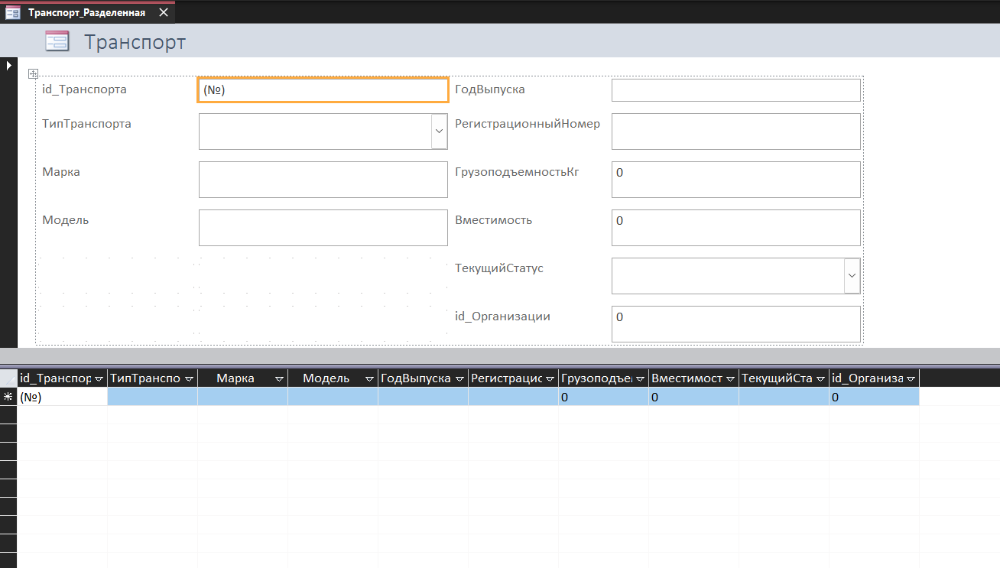
Далее мы выбираем таблицу «Местоположения» и на вкладке «Создание» выбираем из выпадающего списка «Другие формы» - «Модальное диалоговое окно»
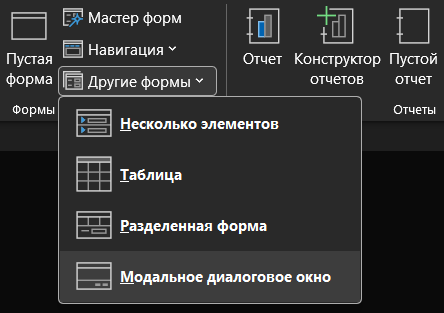
При нажатии у нас открывается отдельное окно конструктор форм, на котором уже расположены кнопки «Ок» и «Отмена»
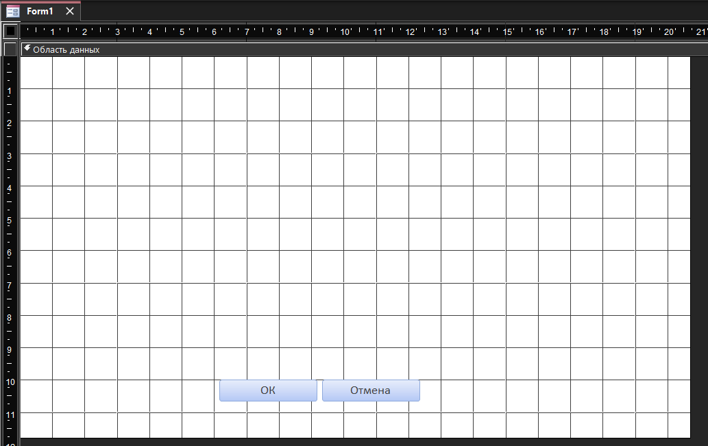
На вкладке «Конструктор форм» в поле «Сервис» выбираем кнопку «Добавить поля» и у нас открывается навигационная панель «Список полей»
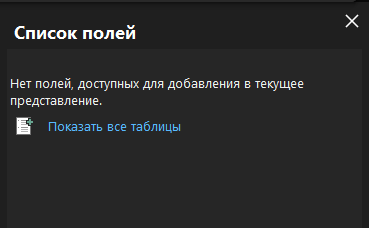
Выбираем кнопку «Показать все таблицы»
Из предложенного варианта выбираем таблицу «Местоположения»
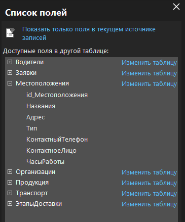
Теперь нам необходимо перенести все поля из навигационной панели таблицы «Местоположения» на форму
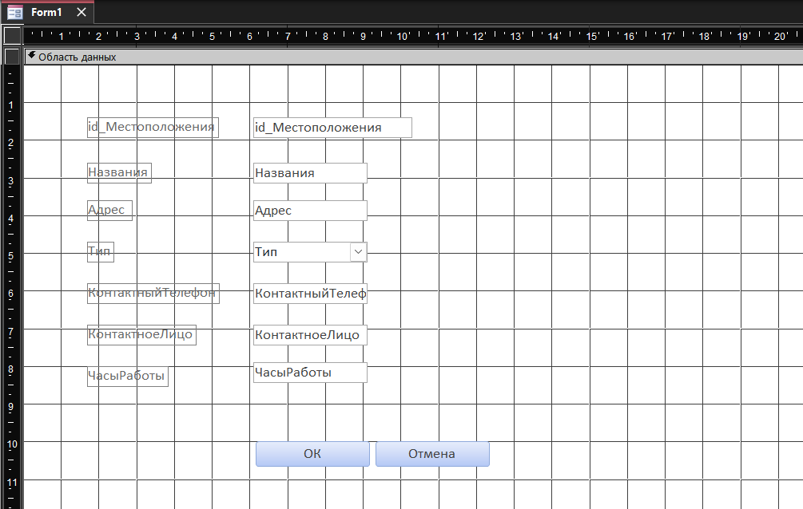
Сохраняем эту форму и даем ей название «Местоположения_Модальное окно».
Теперь при запуске форма Местоположения будет открываться в отдельном окне
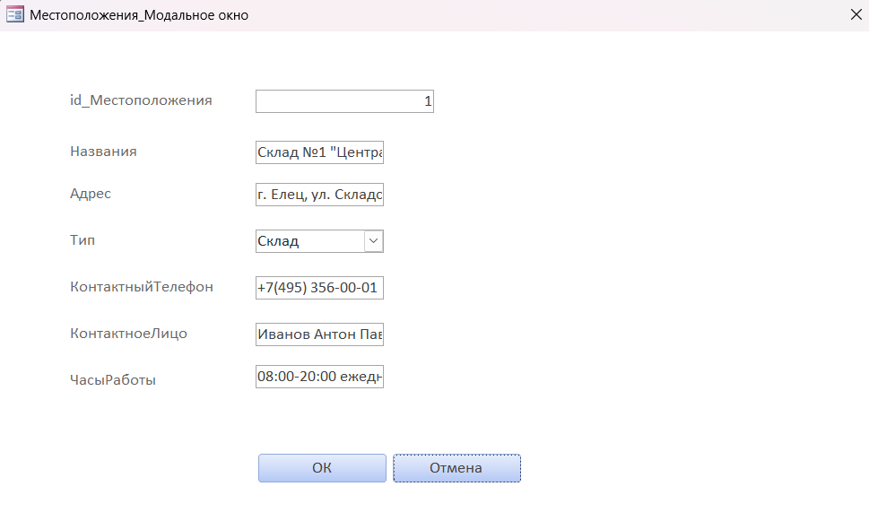